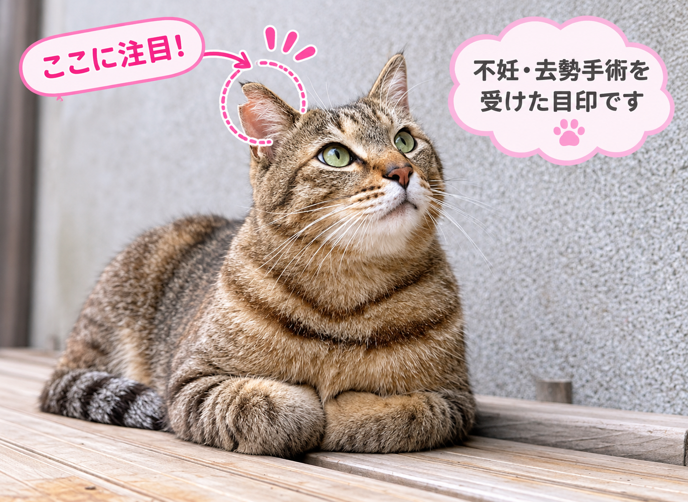
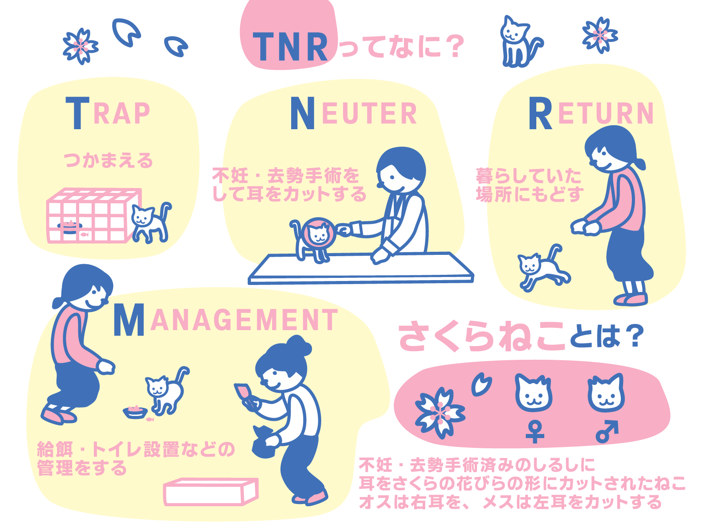
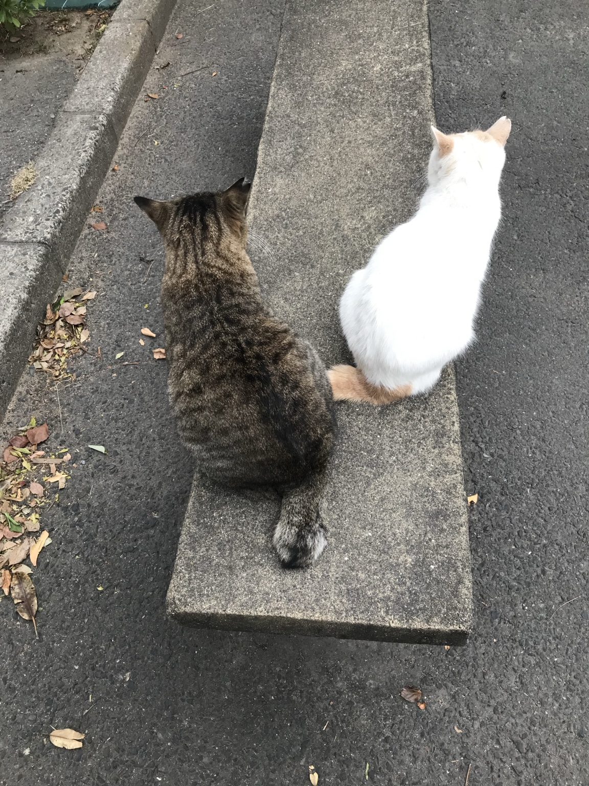

TNR・地域猫について

地域で暮らす猫たちが、人と安心して共に生活できるようにするための取り組みの一つが、TNR活動です。
ここでは、TNR活動や地域猫活動について紹介します。
TNR活動とは

TNRとは、次の4つの取り組みを表しています。
・Trap（トラップ）：猫を捕獲する
・Neuter（ニューター）：不妊・去勢手術を行う
・Return（リターン）：元の場所に戻す
・Management（マネジメント）：餌やりやトイレの管理、健康状態の確認など、地域で継続して見守る
捕獲した猫に不妊・去勢手術を行い、 元の場所に戻したあとも地域で見守る活動です。
この活動を通じて、望まれない繁殖を防ぎ、 猫と人が共に安心して暮らせる環境を目指します。
地域や活動団体によって、耳カットの左右のルールは異なります。
耳カットの意味
不妊・去勢手術を受けた猫には、目印として耳の先を 少しカットすることがあります。この目印は「さくら耳」 と呼ばれ、手術が済んでいることを示す大切なサインです。
同じ場所を何度も捕獲して手術することを防ぐだけでなく、 地域で見守りながら適切にお世話をしていくための目印にも なっています。さくら耳の猫は地域猫として見守られ、 地域のルールに沿って給餌や管理が行われていることがあります。
さくら耳は「地域で大切に見守られている猫」の目印でもあります。
地域猫という考え方
地域猫とは、地域の方々が見守りながら、 人と猫が共に暮らしていくための取り組みです。
適切な餌やりや衛生管理を行い、猫の命を大切にしながら、 地域の環境との調和を目指します。
猫を減らすことだけを目的にするのではなく、 不幸な猫を増やさないこと、そして人と猫が安心して 暮らせる地域を作ることが大切です。
耳カットされた猫への餌やりについて
耳にV字のカットがある猫は、不妊・去勢手術を受けた地域猫の目印です。
地域猫は、地域の理解と協力のもとで見守られている猫たちです。 耳カットされた猫に餌をあげることは、猫たちの命を支える大切な行為であり、 決して悪いことではありません。
しかし、地域猫活動への理解が十分に浸透しておらず、 猫が苦手な方や餌やりに反対する方がいるのも現状です。
餌をあげる際は、地域のルールや周囲の方への配慮を大切にしましょう。食べ残しや容器の片付けはもちろん、猫のフンの始末やトイレの管理も行い、周囲を清潔に保つことが大切です。
猫と人が安心して暮らせる環境をつくるためにも、 地域猫への正しい理解と温かい見守りが広がることを願っています。
